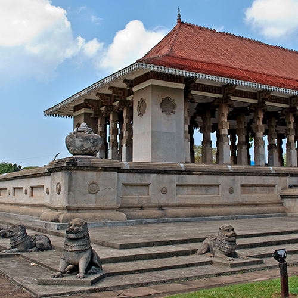

Independance Square
Independence Memorial Hall (also Independence Commemoration Hall) is a national monument in Sri Lanka built for commemoration of the independence of Sri Lanka from the British rule with the restoration of full governing responsibility
to a Ceylonese-elected legislature on February 4, 1948. It is located at the Independence Square (formerly Torrington Square) in the Cinnamon Gardens, Colombo. It also houses the Independence Memorial Museum.